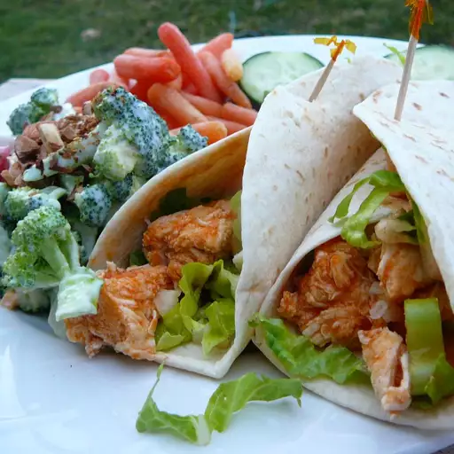

Chicken Wraps Recipe

The final product...
These simple Buffalo chicken wraps can be customized with your family's
favorite toppings. Try shredded cheese, tomatoes, or onions.
Ingredients list
- 1 tablespoon vegetable oil
- 1 tablespoon butter
- 1 pound of chicken thigh
- 1/4 cup of hot sauce
- 4 flour tortillas
- 2 cups of lettuce
- 1 celery stalk
Instructions
- Heat oil and butter in a large skillet over medium-high heat until butter melts. Add chicken;
cook and stir until no longer pink in the center and the juices run clear, about 10 minutes. Remove from the heat.
- Pour hot sauce into the skillet and toss until chicken is coated.
- Lay tortillas out on a work surface. Divide sauced chicken evenly among tortillas, top with lettuce and celery,
then drizzle blue cheese dressing over top. Fold in tortilla sides and roll around filling.